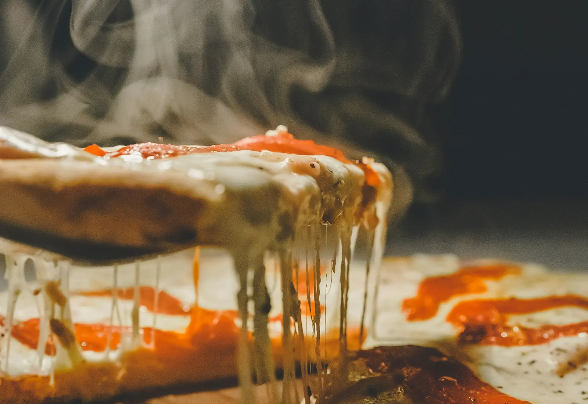
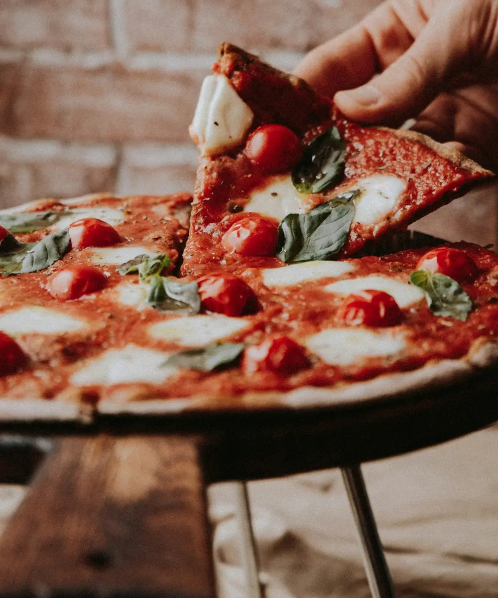
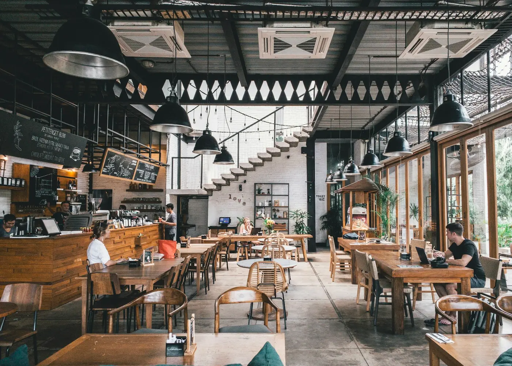
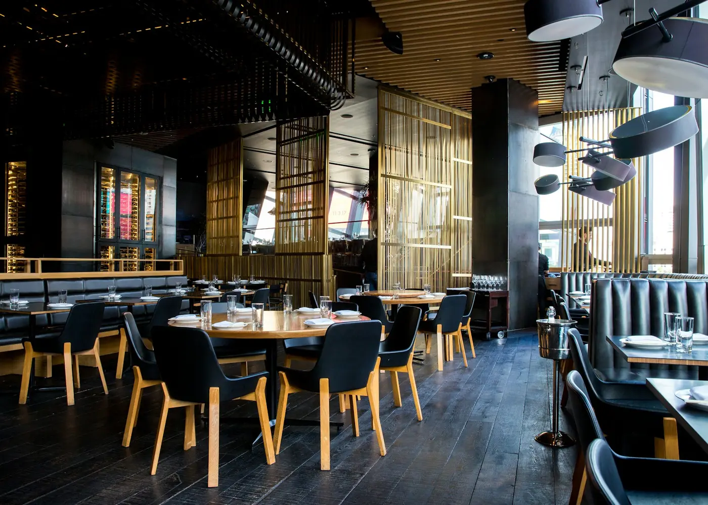

A massa descansa 48 horas. Você espera 90 segundos.
Fermentação lenta, forno a lenha a 450 graus e muito queijo puxando. Peça pra viagem, receba em casa ou venha pra mesa.
Bateu a dúvida? Gira a pizza.
Oito sabores, uma pá de forno e zero responsabilidade sua. Se sair a que você já ia pedir, é sinal.

Uma pizzaria de bairro com forno de verdade
A Fornalha nasceu de uma pergunta simples: por que a pizza boa tem que demorar pra chegar? A resposta virou método. A massa fermenta 48 horas na geladeira, a gente abre na mão na hora do pedido e o forno a lenha faz o resto em noventa segundos.
De terça a domingo o salão enche de gente dividindo tábua, pedindo mais uma rodada e brigando pela última fatia. Delivery para o bairro todo e mesa reservada pelo WhatsApp.
Guardar uma mesa
Quando o forno está aceso
| Segunda | Forno descansando |
|---|---|
| Terça a quinta | 18h às 23h30 |
| Sexta | 18h à meia-noite |
| Sábado | 12h às 15h30 e 18h à meia-noite |
| Domingo | 12h às 15h30 e 18h às 23h |
Delivery próprio
Entregamos em até 40 minutos nos bairros vizinhos, com a pizza em caixa térmica pra borda chegar estalando. Taxa fixa de R$ 8 e pedido mínimo de R$ 45.
Montar meu pedidoO cardápio inteiro
Pepperoni na Brasa
a partir deR$ 44Burrata e Tomatinho
a partir deR$ 49Verde Fornalha
a partir deR$ 42Calabresa Caipira
a partir deR$ 37Portuguesa da Casa
a partir deR$ 40Frango com Catupiry
a partir deR$ 39Horta Assada
a partir deR$ 36Spaghetti Carbonara
R$ 54Penne all'Arrabbiata
R$ 46Spaghetti do Mar
R$ 72Tagliatelle ao Ragu
R$ 58Lasanha da Casa
R$ 56Spaghetti Pomodoro
R$ 42Caesar da Fornalha
R$ 38Bowl Colorido
R$ 42Verdes e Frutas Vermelhas
R$ 39Salada da Horta
R$ 34Farfalle Fria ao Pesto
R$ 36Sangria de Frutas Vermelhas
R$ 34Amaro Tônica
R$ 32Old Fashioned da Brasa
R$ 38Cosmopolitan
R$ 34Limonada Siciliana
R$ 16Chá Gelado da Casa
R$ 14Tábua da Fornalha
R$ 89Bruschetta de Tomate
R$ 32Polpettine na Rúcula
R$ 44Fritas com Parmesão
R$ 34Batata Rústica Picante
R$ 29Tiramisù de Colher
R$ 28Nada com esse nome por aqui. Tenta outro ingrediente ou limpa os filtros.
